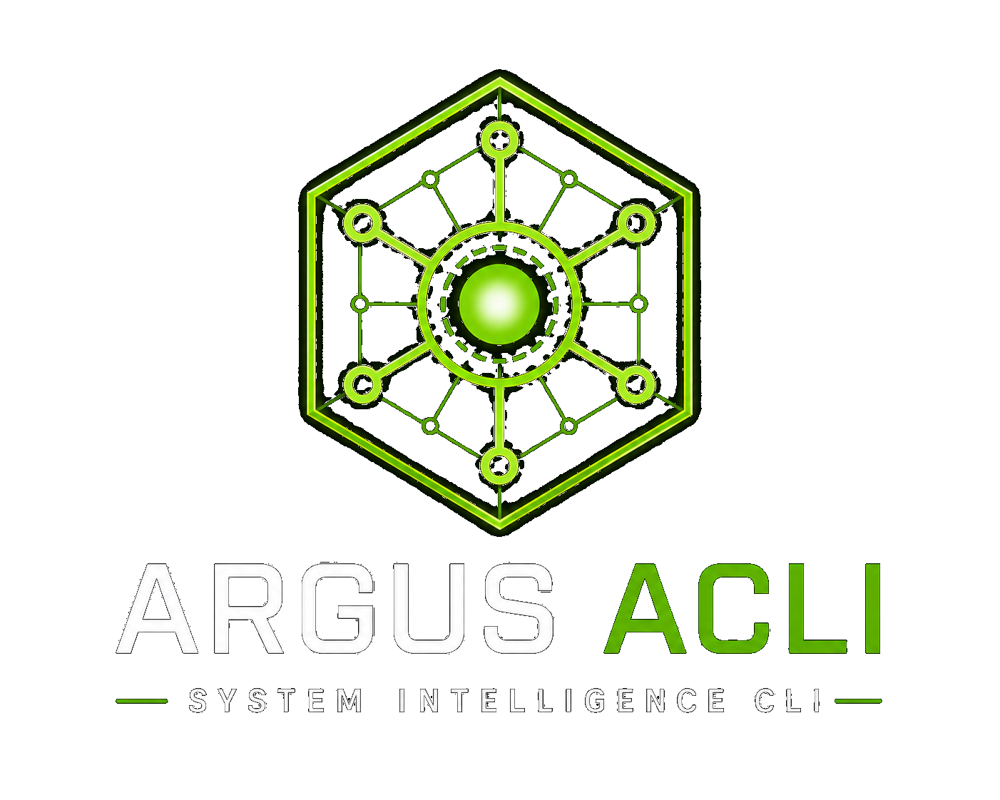

Argus ACLI
Local-first Linux intelligence that respects the machine.
Argus ACLI turns raw Linux telemetry into structured findings, severity, recommendations, and verifiable evidence without copying sensitive logs, service errors, host details, or internal system data into a cloud chatbot.

Under active development
V1 is focused on local, read-only Linux diagnostics.
Argus ACLI is being built as the first practical distribution on NeuroCore. The current foundation focuses on structured diagnostics, raw evidence, concise terminal output, and controlled system interaction.
The problem
Too much data. Not enough signal.
Linux gives you logs, processes, services, memory, disk usage, network state, and command output. The hard part is knowing what matters right now, how serious it is, and what evidence supports the next troubleshooting step.
What it does
A clearer starting point for real Linux troubleshooting.
Argus ACLI collects real system signals and turns them into actionable understanding: findings, severity, recommendations, and raw evidence that can be inspected when needed.
It does not replace Linux knowledge. It reduces the time spent gathering basic context so the user can get to the useful part faster.
Local-first
Diagnostic context stays on the machine where it was collected instead of becoming pasted chatbot input.
Read-only
Argus inspects, structures, and explains Linux system state without automatically changing the machine.
Evidence-backed
Findings stay connected to raw system evidence so users can verify what Argus is reporting.
Why this exists
Argus brings the NeuroCore origin lesson closer to the machine.
NeuroCore began with a continuity problem: artificial intelligence (AI) could seem useful in the moment but still lose the larger operational picture later. That experience shaped one of the core ideas behind TENSA Engineering: AI is fragile when it is not grounded in durable context.
Argus applies that same idea to Linux systems. A machine can produce logs, process lists, disk usage, memory output, network state, and service status all day long, but raw data by itself is not the same as understanding.
Argus starts with structure and evidence. It preserves what the system actually reported, organizes those signals into findings, and gives the model a grounded view of the machine. The model helps explain, guide, and answer follow-up questions, but it is grounded by evidence from the system itself.
See the idea
From raw telemetry to a diagnostic view.
A normal system check should not force the user to read disconnected output from five different commands before deciding where to look. Argus is designed to pull the first layer of system context together.
$ acli system
System Analysis [WARN]
Findings:
- [disk] [WARN] High disk usage on /var
- [network] [WARN] 1 interface is not up
- [memory] [OK] Memory usage is healthy
- [processes] [OK] No abnormal CPU or memory usage detected
Recommendations:
- Investigate disk usage and free up space
- Review network interface state and connectivity
Raw evidence hidden by default.
To inspect raw evidence, run: acli --raw systemThe default view stays readable. Raw evidence remains available when the user wants to verify the finding or dig deeper.
AI, grounded by evidence
The model explains from system evidence, not disconnected noise.
Argus is designed so the model does not start from a pile of unmanaged terminal output. The deterministic diagnostic layer does the first pass: collecting real system data, structuring it, identifying findings, assigning severity, and preserving evidence.
That gives the model a cleaner problem to work from. Instead of guessing what matters from disconnected command output, the model receives grounded system context: what was checked, what was found, how serious it appears, and what evidence supports the finding.
The result is not AI guessing at Linux. It is AI explanation layered on top of controlled, read-only diagnostics.
NeuroCore foundation
Argus is not just a wrapper around shell commands.
Argus ACLI is built on NeuroCore. Every request flows through NeuroCore’s controlled runtime before reaching approved tools. The command line is the interface, not a shortcut around the platform.
NeuroCore provides the runtime, control plane, execution path, tool boundaries, and observability. Argus provides the Linux diagnostic experience on top of that platform.
Command-line experience
Simple first. Powerful when needed.
Argus ACLI is being shaped around different levels of detail. The default output is concise. Raw evidence is available on demand. JSON output supports structured workflows. Severity and signal filters help users focus on the issue they care about.
acli system
acli disk
acli memory
acli network
acli logs
acli --raw system
acli --summary system
acli --json system
acli system --severity WARN
acli system --signal diskThe long-term direction also includes natural-language interaction for broader questions while keeping execution controlled through NeuroCore.
acli "what's wrong with my system?"
acli "why is disk warning?"
acli "what should I check next?"Who it is for
People working close to real systems.
Argus ACLI is being built for Linux administrators, homelab users, small teams, startups, engineers managing their own infrastructure, and learners building real troubleshooting skill.
It is especially useful in environments where time and expertise are stretched. The goal is not to automate the admin away. The goal is to give users faster signal, clearer evidence, and a better starting point.